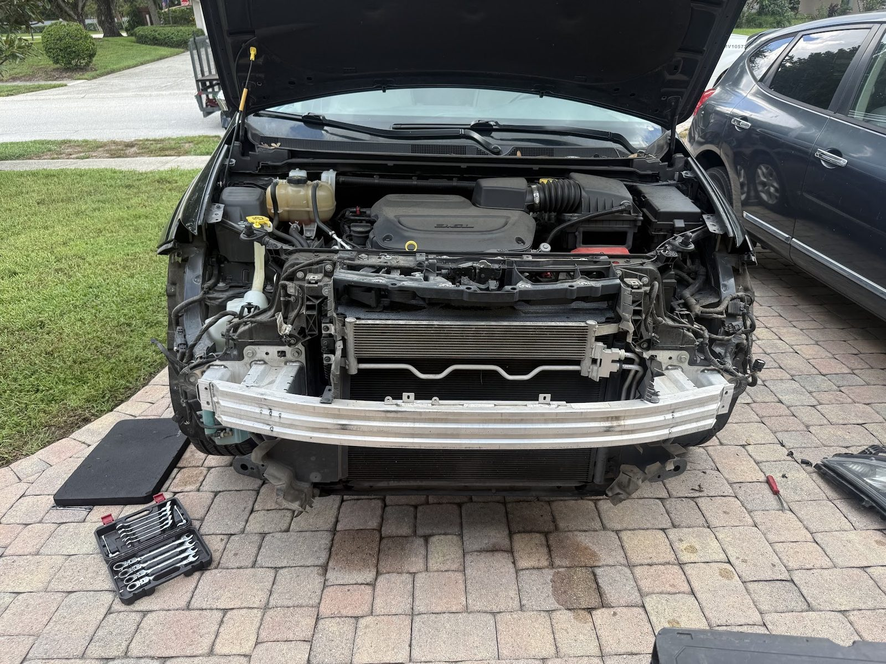
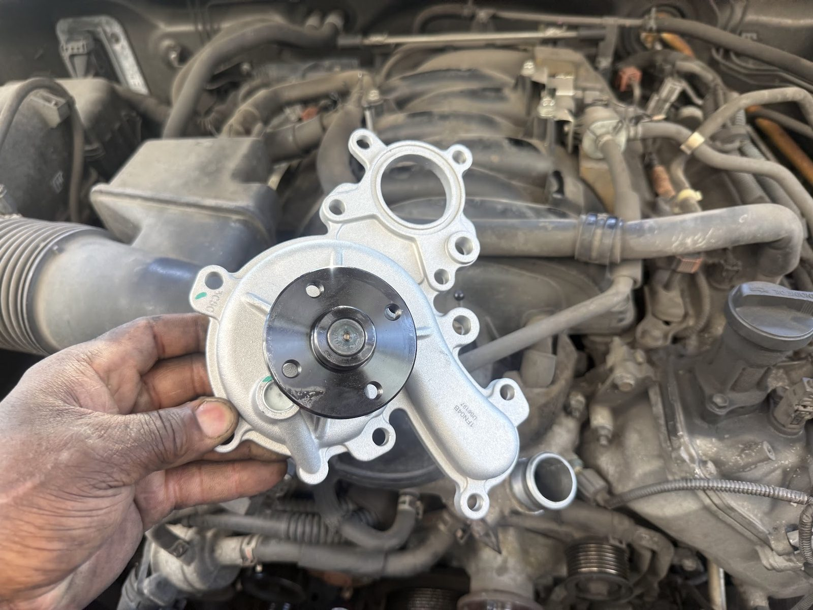
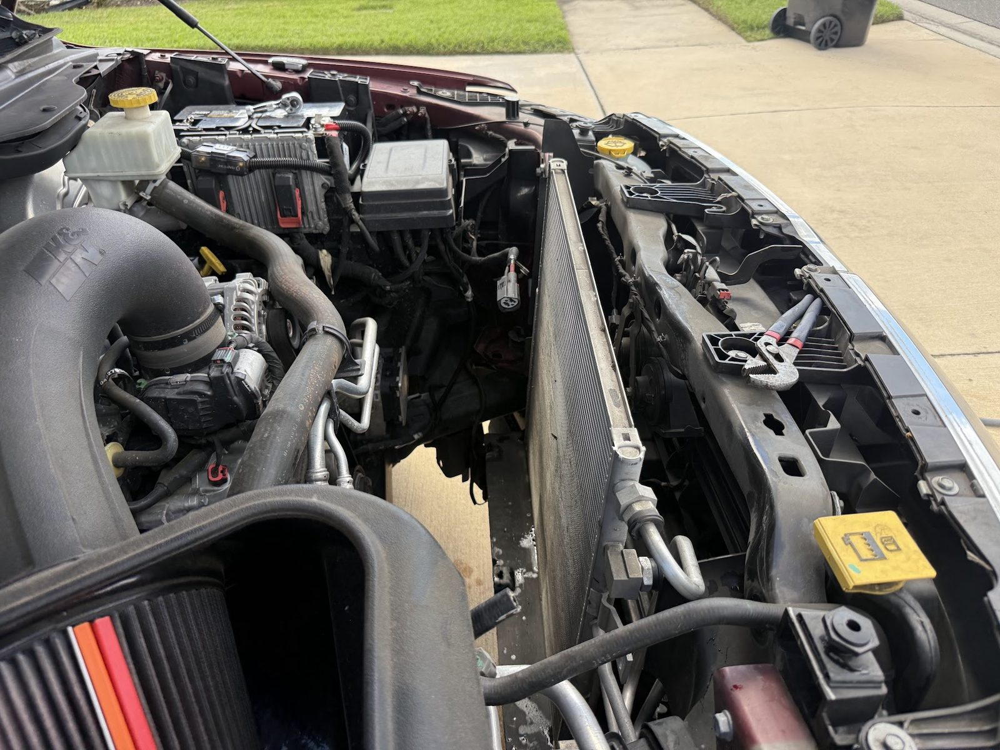
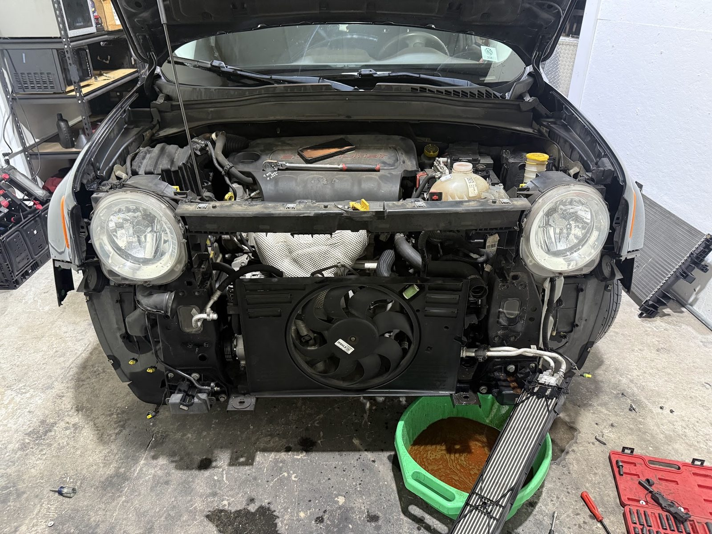
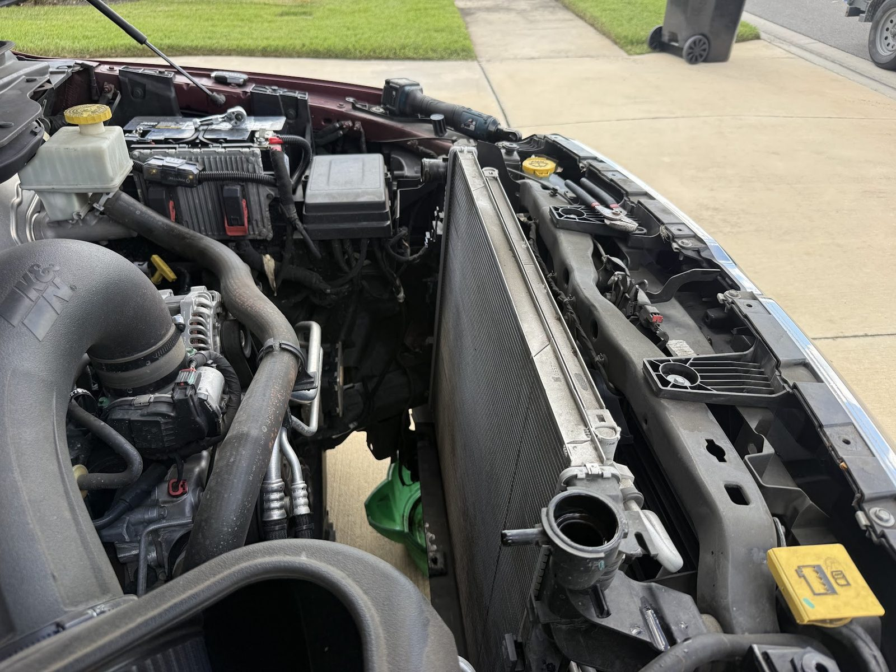
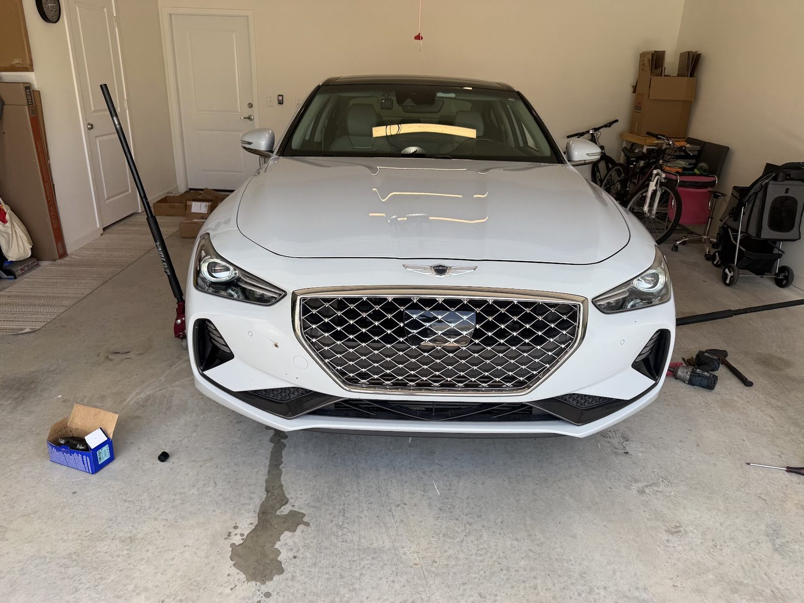
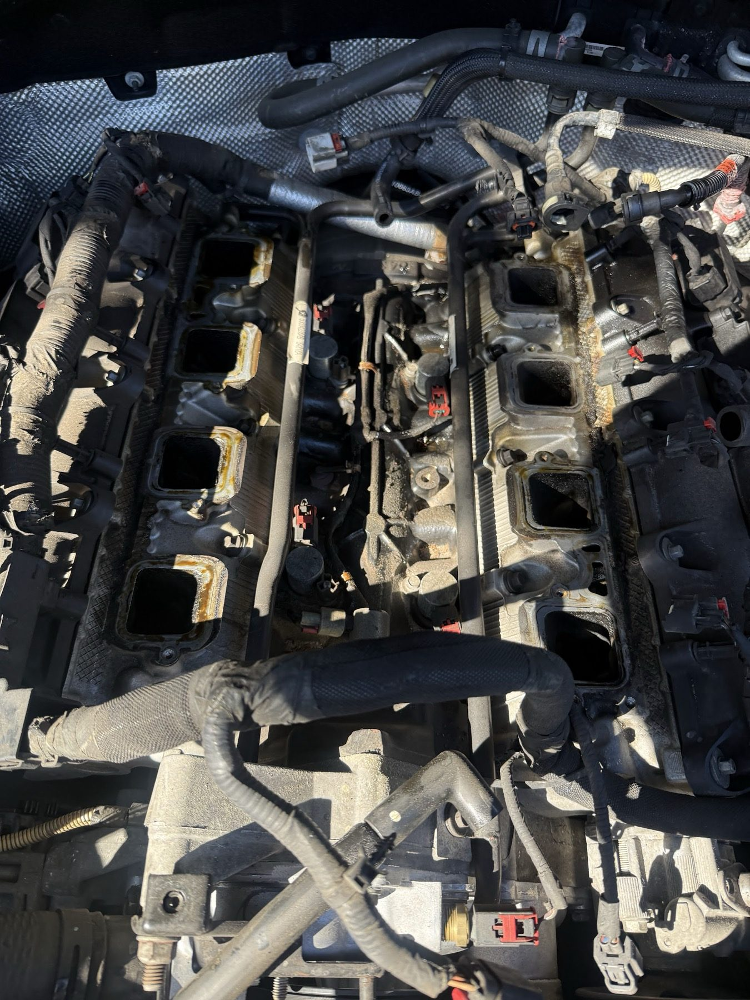
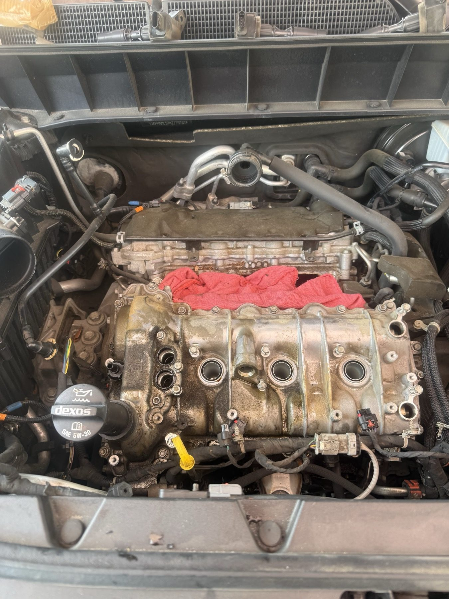

Radiators and water pumps
Cooling parts replaced where your car is parked.
- Radiator swaps
- Water pumps
Mobile mechanic · Wesley Chapel, FL
Mobile repair and maintenance for cars and Jeeps in Wesley Chapel.

Dispatch board
Cars and Jeeps, repaired and maintained at your driveway.
Cooling parts replaced where your car is parked.
Oil services and routine maintenance for cars and Jeeps.
Engine-bay repairs on cars and Jeeps, done on your driveway.
Reviews
5.0 14 Google reviews
“Phenomenal service. Responded quickly and came out in just a short time. Repair was done quickly and efficiently. I would absolutely recommend Zeke and if needed, would use again. Excellent service!!!”
“Zeke is great! Really reliable, does quality work, very professional and my fave part is he’s mobile which is very convenient. Highly recommend!”
“By far the best mechanic ive ever had. always very dependable, he takes pride in his work which means everything to me. Never leaves a job until its 100 % done and done right. Good, honest mechanics are extremely hard to come by, and this man is one of the very few that genuinely cares about his customers. Nobody better. NOBODY!”
Who answers the phone
Hands-on repair at your driveway, from cooling parts to oil services.
Call or text what your car is doing and we will tell you when we can come out.

Your driveway is the shop.
Fast to arrive, quick to finish.
Every repair finished properly before we leave.
On the job






Hours & directions
4334 Crabapple Dr Unit 207, Wesley Chapel, FL 33545
Mobile service: we come to you. Call or text to set up a time.